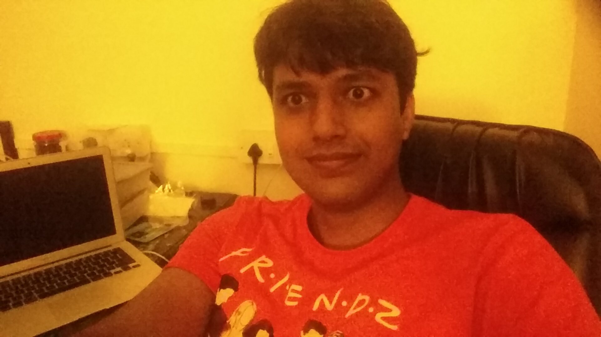

Manish Kumar Choudhary
Software Engineer
LivQuik Technology India Pvt Ltd
Mobile:+918762070029
Professional Goal
To stay updated with new technologies and use it to solve real world problems and see the impact on people life.
Scholastics
I have completed B.E. in Computer Science and Engineering from SDMCET Dharwad, of Vishveshvarayya Technical University, Belgaum, Karnataka (2010-2014).
| Class | Board/University | Name of school/college | Year of Passing | CGPA/Marks % |
|---|---|---|---|---|
| BE Computer Science & Engineering | VTU | SDM College of Engineering and Technology | 2014 | 8.19 |
| Class XII (PCM) | CBSE | Kendriya vidyalaya IOC Barauni | 2009 | 70.4 |
| Class X | CBSE | Kendriya vidyalaya IOC Barauni | 2007 | 75.4 |
Software Exposure
Programming Language : Java, C
Scripting Language: Bash Script
Database: DB2, MySql
Data structure server: Redis
Operating Systems : Linux (Ubuntu distribution & RHEL), windows 7, Android
Debugging Tools : GDB, ADB
Version Tool: Git
IDE: Android Studio, Eclipse, Intellij
FrameWorks : Java REST, Hibernate, Backbone.js, Marionette.js
Issue Tracking: IBM ClearQuest, JIRA
Build Tools: Maven, Gradle
Webservers : Apache, Nginx
Projects
Project Name: QuikWallet SDK (Aug 2015 - Current) at LivQuik Technologies Limited
Role :
Android Developer
Responsibilities:
QuikWallet SDK development using MVP architecture. Implementation from scratch.
About QuikWallet SDK:
It is a ready to use android library for online/offline payment solution.
Project URL: https://bintray.com/androiddev/maven/qwsdkui/
Technologies Used: Java, Android , Git,
Project Name: QuikWallet SDK Core (June 2015 - Aug 2015) at LivQuik Technologies Limited
Role :
Developer
Responsibilities:
QuikWallet SDK core development using microkernel architecture. Design decisions like identifying different sub system and their implementation. Android app changes with new core.
About SDK core:
SDK Core is responsible for making REST request and handling related exceptions. It contains POJO and util classes for making REST request. It also handles Marshalling/unmarshalling Java objects.
Project URL: https://bintray.com/androiddev/maven/qwcore
Technologies Used: Java, Android , Git, Gradle
Project Name: IBM SAAS (Sept 2014 - June 2015) at Persistent Systems Limited
Role:
Java Developer
Responsibilities:
Resolving errors/bugs in the current BSS core code. Implementation of new customer requirement.
Shell script to automate devops work. Development of bill management using HighDeal (SAP).
About BSS: The BSS core manages every business interaction between user and vendor. Vendors are like IBM Bluemix, IBM Watson etc.
Project URL : http://www.ibm.com/cloud-computing/bluemix/
Technologies Used: Core Java, Java REST, Hibernate, Shell script, Spring MVC, HighDeal
Hobby Projects
-
Open REST API’s to get bank details using IFSC/MICR code. https://github.com/mangrep/ifsc-rest-api (Hosted on AWS)
-
Singe page web app to seach IFSC code https://github.com/mangrep/IFSC-search-web-app (Hosted on AWS http://ifsc.techm.co.in )
-
Stackoverflow android app using stack exchange apis. https://github.com/mangrep/Stackoverflow
Freelance Projects
- Reglious android app with in app purchase feature. https://play.google.com/store/apps/details?id=com.hammutech.muslimsislamicapp
- Android SDK for Offerwall http://developers.supersonic.com/android/sdk-integration/getting-started-with-supersonic-android-sdk/
- Yogic app (under development) https://play.google.com/store/apps/details?id=com.yogic.magazine.app
Achievements
- Selected for Prime Minister’s Scholarship by Ministry of Home affairs India in year 2012 & 2013.
- Winner of TV program “Aisa hi hota hai” contest 18 . Awarded by Vigyanprasar an autonomous body under department of science and technology government of India.
- Winner of “together with” CBSE/ICSE pariksha awards 2009.
- Won 3rd prize in 18th Regional Youth Parliament (high school).
Personal Dossier
| Name | Manish Kumar Choudhary |
|---|---|
| Father's’ Name | Late Uma Shankar Choudhary |
| Mother’s Name | Smt Pawan Devi |
| Date of Birth | 09-Feb-1991 |
| Hobbies | News reading/ Freelancing |
Declaration
I Manish Kumar Choudhary, hereby declare that the information given above is true to the best of my Knowledge and belief.
Place : Mumbai
Date 26-06-2016
Manish Kumar Choudhary
References
Name: Arjun Nayak
Designation : Software Engineer Livquik Technology (India) Pvt Ltd
Mob: +91750697761
Email : arjun.nayak@livquik.com
Name: Raushan
Designation : Associate application engineer Oracle
Mob: +918142504096